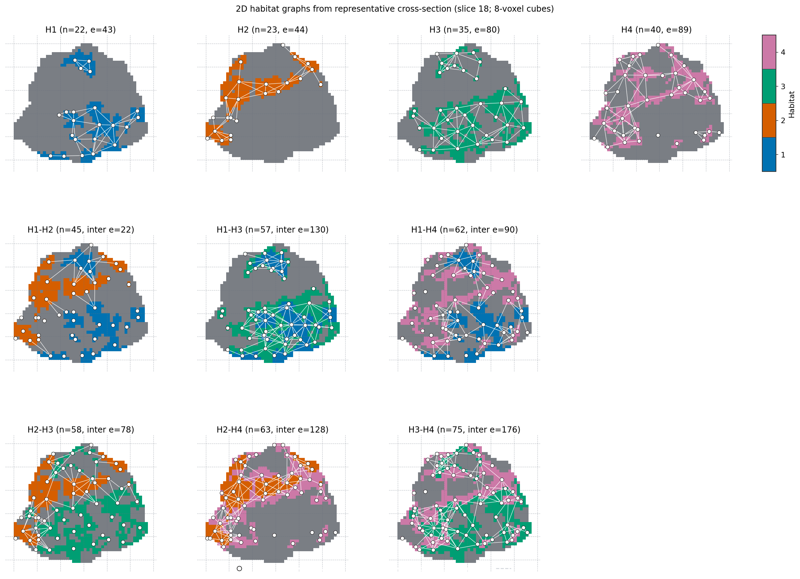

图拓扑特征#
目标：从生境标签图提取内置生境 图拓扑 特征（节点 / 边 / 指标），可选 2D/3D 图。
需先生境图（生境分割（CLI / YAML） ）。本页为 CLI / YAML 书签。端到端 Python 图库：生境 graph network 特征 。审稿级公式：图拓扑特征 。
graph 为 特征公式 下 内置 轻量族（与 volume / msi / ith_score 同级）。优先域/公开 API； habit.compat graph shim 为弃用过渡加载器。
CLI / YAML#
随附 extract YAML 已在默认轻量 graph 中列出 feature_types 。可选调顶层 graph: 块（验证为 GraphFeatureBlock ）。每条 shell 命令一行（Windows / conda PowerShell）:
habit extract --config path/to/your_extract_with_graph.yaml
最小 YAML 片段：
feature_types:
- volume
- graph
graph:
edge_method: min_distance
distance_threshold: 5.0
node_method: uniform_grid
block_size: 8
block_min_coverage: 0.2
connectivity: full
erosion_radius: 0
include_single_habitat_graph: true
include_pairwise_habitat_graph: true
include_extended_metrics: true
visualize: false
visualization_show_grid: true
visualization_block_size: null
visualization_grid_linestyle: "--"
Outputs:
habitat_graph_features.csvunderout_dir当
graph.visualize: true时，out_dir/visualizations/graph/下的可选数字（2D 需要 matplotlib；3D 还需要 napari）
默认节点位于全局 VOI 格子上 每格子区域质心 （ node_method: uniform_grid ， block_size: 8 体素 ，非毫米）。立方体占用比例超过 block_min_coverage （默认 0.2 ）时保留；其内每个连通生境片段成为独立节点。当两节点最近体素在 5 个体素索引单位内（ edge_method: min_distance ， distance_threshold: 5 ）时 存在边 。面邻 8 立方体相连（最近体素相距一跳）。立方体间空一格时最近体素距离约 8，大于 5，故仍断开。 无 形态学腐蚀（ erosion_radius: 0 ）。 node_method: component 为连通分量节点； edge_method: adjacency 为接触体素边（默认接触计数 >= 10）。 centroid_distance 为旧质心邻近规则。2D 图以虚线绘制 相同格子 。每个 featured-habitat 面板仅该生境填色；白节点与白内部边叠加（中深灰底使白线可见；无浅灰其他生境填充）。每个无序生境对单独面板，两色填充且 仅该对之间白 inter-edges 。
参数参考：特征提取配置 。
Python API#
下图由图网络图库（生境 graph network 特征 ）生成 — 一步法 固定 n_habitats=4 与库默认图（8 体素均匀立方 + 子区域质心节点 + min-distance 边 + 虚线格网）。复现：:
python docs/source/examples/scripts/graph_features_demo.py
或粘贴图库所示相同代码：
from habit.contracts import cohort_from_directory
from habit.datasets import fetch_demo
from habit.kernels import HabitatGraphFeatureOptions, extract_graph_features
from habit.recipes import one_step_habitat
from habit.viz import plot_habitat_graph_network_2d, plot_habitat_graph_slice
DATA = fetch_demo()
MODALITIES = ("LAP",)
ROI = "LAP"
cohort = cohort_from_directory(DATA, modalities=MODALITIES, roi=ROI)[:1]
result = one_step_habitat(
modalities=MODALITIES, n_habitats=4, random_seed=0, roi=ROI
).fit_predict(cohort)
labels = result.habitat_maps[0].label_array
options = HabitatGraphFeatureOptions()
# Extended metrics (efficiency / Humphries sigma / rich-club) are on
# by default. Pass include_extended_metrics=False to omit. Default
# small-world null is analytic ER; pass graph_null_sampler='config'
# or 'rewire' to replace it (not add a second column). See the
# reference page.
# Full 3D map for features; the 2D network below is display-only.
feats = extract_graph_features(labels, options=options)
fig = plot_habitat_graph_slice(
labels, options=options, show_grid=True, block_size=8, grid_linestyle="--"
)
fig = plot_habitat_graph_network_2d(
labels, options=options, show_grid=True, block_size=8, grid_linestyle="--"
)
Stream the same options through a 一步法 Report so each completed 受试者 writes graph_slice.png and graph_network_2d.png (2D display-only; metrics stay 3D):
from dataclasses import asdict
from habit.adapters import DirectoryResultWriter
from habit.kernels import HabitatGraphFeatureOptions
from habit.report import GraphNetwork2D, GraphSlice, Report
graph = HabitatGraphFeatureOptions(edge_method="min_distance", block_size=8)
writer = DirectoryResultWriter("out/study")
# Spec("graph", asdict(graph)) on the quantify stage, then:
report = Report(
figures=(GraphSlice(options=graph), GraphNetwork2D(options=graph)),
figure_layout="by_subject",
writer=writer,
)
完整演练：生境 inside each 受试者 （ Stream per subject ）。
Optional: other HabitatGraphFeatureOptions(...) fields, registry
HabitatFeatureExtractorRegistry.create("graph", ...), and 3D
render_habitat_graph_network_3d() /
render_habitat_graph_surface_3d() (needs napari).
小世界 \(sigma\) 与随机图零模型#
公式、三种 null 与引用论文：图拓扑特征 （ Small-worldness and random-graph nulls ）。简图：
graph_null_sampler='analytic'（默认）— Humphries S 对同 \(n\) 、\(m\) 的 Erdős–Rényi 图（闭式 \(C_{mathrm{rand}}\) 、\(L_{mathrm{rand}}\) ）。'config'— 配置模型（保持度序列；stub matching）。'rewire'— Maslov–Sneppen 双边交换（NetworkXsigma/random_reference）。
These are alternative random-graph references, not three extra 特征. One small_world_sigma column; changing the sampler replaces the number. 生境图 are spatial: none of the three nulls preserve 体素 geometry.
保度零模型 API#
零模型仅用于解释须控制度序列的拓扑指标；不用于物理接触、距离、离散或节点体积特征归一化。结果记录请求与成功随机图数，用 Z 分数前检查 is_valid:
import networkx as nx
import numpy as np
from habit.kernels import (
GraphNullModelOptions,
build_min_distance_graph,
compare_graph_to_degree_preserving_null,
extract_habitat_nodes,
)
# Swap in a HabitatMap.label_array from the previous block when you have one.
labels = np.zeros((16, 16, 16), dtype=np.int32)
labels[2:14, 2:14, 2:14] = 1
labels[6:10, 6:10, 6:10] = 2
nodes = extract_habitat_nodes(
label_array=labels,
node_method="uniform_grid",
block_size=8,
block_min_coverage=0.2,
)
graph = build_min_distance_graph(
node_result=nodes,
labels=(1,), # Compare topology of habitat 1.
graph_kind="single",
distance_threshold=5.0,
)
result = compare_graph_to_degree_preserving_null(
graph,
nx.average_clustering,
options=GraphNullModelOptions(
n_random_graphs=200,
sampler="rewire",
swaps_per_edge=100,
random_seed=42,
),
)
if result.is_valid:
print(result.observed, result.z_score, result.empirical_two_sided_p)
随机图保留各节点度、总节点数与总边数，但不保留连通分量、物理坐标、距离、接触或生境标签。见 图拓扑特征 中适用该参考的特征列表与报告限制。


与 gallery 脚本写入 out/graph_habitat_network_2d.png 的同一文件。特征来自完整 3D 图；此 2D 网络仅用于显示。gallery 亦在 block_size=5 比较相同 3D 图。#
Also see#
特征提取通用 how-to：之后：用于统计 / ML 的生境特征
示例图库：生境 graph network 特征
特征列：图拓扑特征